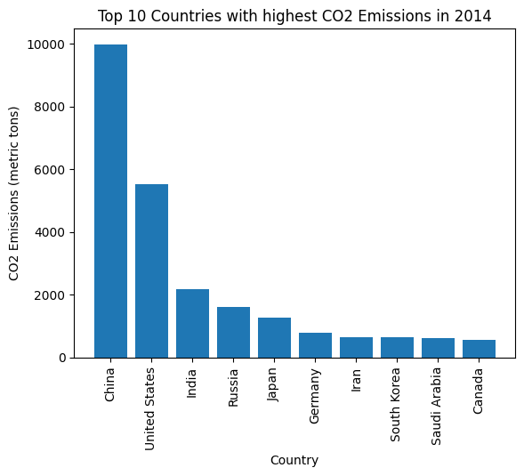
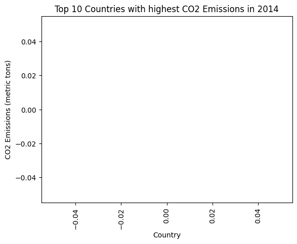
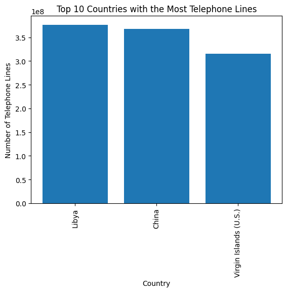

Which countries are the leaders in CO2 emmissions?
import pandas as pdimport matplotlib.pyplot as plt# Load the datadf = pd.read_csv('https://corgis-edu.github.io/corgis/datasets/csv/global_emissions/global_emissions.csv')# Select a specific yearyear =2014df_year = df[df['Year'] == year]# Sort the data by total CO2 emissionsdf_sorted = df_year.sort_values(by='Emissions.Production.CO2.Total', ascending=False)# Select the top 10 countriesdf_top10 = df_sorted.head(10)# Plot the bar chartplt.bar(df_top10['Country.Name'], df_top10['Emissions.Production.CO2.Total'])plt.title(f'Top 10 Countries with highest CO2 Emissions in {year}')plt.xlabel('Country')plt.ylabel('CO2 Emissions (metric tons)')plt.xticks(rotation=90)plt.show()

import pandas as pdimport matplotlib.pyplot as plt# Load the datadf = pd.read_csv('https://corgis-edu.github.io/corgis/datasets/csv/global_emissions/global_emissions.csv')# Select a specific yearyear =2014df_year = df[df['Year'] == year]# Sort the data by total CO2 emissionsdf_sorted = df_year.sort_values(by='Emissions.Production.CO2.Total', ascending=True)# Select the top 10 countriesdf_bottom10 = df_sorted.head(10)# Plot the bar chartplt.bar(df_bottom10['Country.Name'], df_bottom10['Emissions.Production.CO2.Total'])plt.title(f'Bottom 10 Countries with lowest CO2 Emissions in {year}')plt.xlabel('Country')plt.ylabel('CO2 Emissions (metric tons)')plt.xticks(rotation=90)plt.show()
Data.Urban Development.Urban Population Percent Growth
0
Canada
1980
15.400000
7.000000
1.754000
78.590000
71.320000
74.866341
0.997669
24277000.0
...
7.357225
1.827821
4.879744
9093510.0
5918004
0.833712
9984670.0
2.669706
75.623000
1.050578
1
Canada
1981
15.400000
7.100000
1.740000
78.730000
71.600000
75.078049
1.293245
24593000.0
...
7.301471
1.818526
4.918123
9093510.0
5985198
1.129019
9984670.0
2.704456
75.663000
1.346126
2
Canada
1982
15.300000
7.000000
1.700000
79.110000
72.020000
75.478537
1.240595
24900000.0
...
7.245717
1.810120
4.956502
9093510.0
6047712
1.039060
9984670.0
2.738217
75.712000
1.305333
3
Canada
1983
15.100000
7.100000
1.690000
79.230000
72.300000
75.680488
1.205555
25202000.0
...
7.288275
1.789779
4.960241
9093510.0
6080235
0.536333
9984670.0
2.771427
75.874000
1.419293
4
Canada
1984
15.000000
7.000000
1.680000
79.550000
72.690000
76.036341
1.002812
25456000.0
...
7.330943
1.773217
4.963870
9093510.0
6100530
0.333231
9984670.0
2.799359
76.035000
1.214785
...
...
...
...
...
...
...
...
...
...
...
...
...
...
...
...
...
...
...
...
...
...
6421
Heavily indebted poor countries (HIPC)
2009
39.694362
11.568275
5.448853
57.314810
55.042182
56.149510
2.755547
589184942.0
...
40.224998
0.259585
7.742953
19752631.0
404203594
2.132400
20392171.0
29.828175
31.396143
4.144006
6422
Heavily indebted poor countries (HIPC)
2010
39.249875
11.239563
5.363884
57.941917
55.580622
56.731231
2.742284
605342064.0
...
40.282701
0.254637
7.803635
19752631.0
412723475
2.107819
20392171.0
30.646149
31.819793
4.128655
6423
Heavily indebted poor countries (HIPC)
2011
38.807293
10.936774
5.278963
58.533726
56.080300
57.275881
2.728734
621860240.0
...
40.402744
0.251078
7.904542
19752631.0
421313384
2.081275
20392171.0
31.482400
32.249506
4.116045
6424
Heavily indebted poor countries (HIPC)
2012
38.366140
10.661019
5.194085
59.080577
56.538581
57.777390
2.714024
638737676.0
...
39.072643
0.243605
7.877416
19752631.0
429969441
2.054541
19765718.5
32.336840
32.684503
4.099480
6425
Heavily indebted poor countries (HIPC)
2013
37.924698
10.407943
5.109213
59.585337
56.962692
58.240852
2.698148
655971763.0
...
39.676293
0.253896
8.431096
19754076.0
438680058
2.025869
19767153.5
33.206907
33.125161
4.082743
6426 rows × 25 columns
import pandas as pdimport matplotlib.pyplot as plt# Load the datadf = pd.read_csv('https://corgis-edu.github.io/corgis/datasets/csv/global_development/global_development.csv')# Select a specific yearyear =2014df_year = df[df['Year'] == year]# Sort the data by total CO2 emissionsdf_sorted = df_year.sort_values(by='Data.Infrastructure.Telephone Lines', ascending=False)# Select the top 10 countriesdf_top10 = df_sorted.head(10)# Plot the bar chartplt.bar(df_top10['Country'], df_top10['Data.Infrastructure.Telephone Lines'])plt.title(f'Top 10 Countries with highest CO2 Emissions in {year}')plt.xlabel('Country')plt.ylabel('CO2 Emissions (metric tons)')plt.xticks(rotation=90)plt.show()

import pandas as pdimport matplotlib.pyplot as plt# Load the datadf = pd.read_csv('https://corgis-edu.github.io/corgis/datasets/csv/global_development/global_development.csv')# Select the columns of interesttelephone_data = df[['Country', 'Data.Infrastructure.Telephone Lines']]# Drop rows with missing datatelephone_data = telephone_data.dropna()# Filter out the row with country name "World"telephone_data = telephone_data[telephone_data['Country'] !='World']telephone_data = telephone_data[telephone_data['Country'] !='Low & middle income']telephone_data = telephone_data[telephone_data['Country'] !='Middle income']telephone_data = telephone_data[telephone_data['Country'] !='High income']telephone_data = telephone_data[telephone_data['Country'] !='OECD members']telephone_data = telephone_data[telephone_data['Country'] !='High income: OECD']telephone_data = telephone_data[telephone_data['Country'] !='East Asia & Pacific (all income levels)']telephone_data = telephone_data[telephone_data['Country'] !='East Asia & Pacific (developing only)']# Sort the data by number of telephone linestelephone_data = telephone_data.sort_values(by='Data.Infrastructure.Telephone Lines', ascending=False)# Select the top 10 countriestop10 = telephone_data.head(10)# Create the bar chartplt.bar(top10['Country'], top10['Data.Infrastructure.Telephone Lines'])plt.title('Top 10 Countries with the Most Telephone Lines')plt.xlabel('Country')plt.ylabel('Number of Telephone Lines')plt.xticks(rotation=90)plt.show()

import pandas as pdimport matplotlib.pyplot as plt# Load the datadf = pd.read_csv('https://corgis-edu.github.io/corgis/datasets/csv/global_development/global_development.csv')# Select the columns of interesttelephone_data = df[['Country', 'Data.Rural Development.Rural Population Growth']]# Drop rows with missing datatelephone_data = telephone_data.dropna()# Filter out the row with country name "World"telephone_data = telephone_data[telephone_data['Country'] !='World']# Sort the data by number of telephone linestelephone_data = telephone_data.sort_values(by='Data.Rural Development.Rural Population Growth', ascending=False)# Select the top 10 countriestop10 = telephone_data.head(10)# Create the bar chartplt.bar(top10['Country'], top10['Data.Rural Development.Rural Population Growth'])plt.title('Most Rural Developement Growth')plt.xlabel('Country')plt.ylabel('Number of Growth')plt.xticks(rotation=90)plt.show()